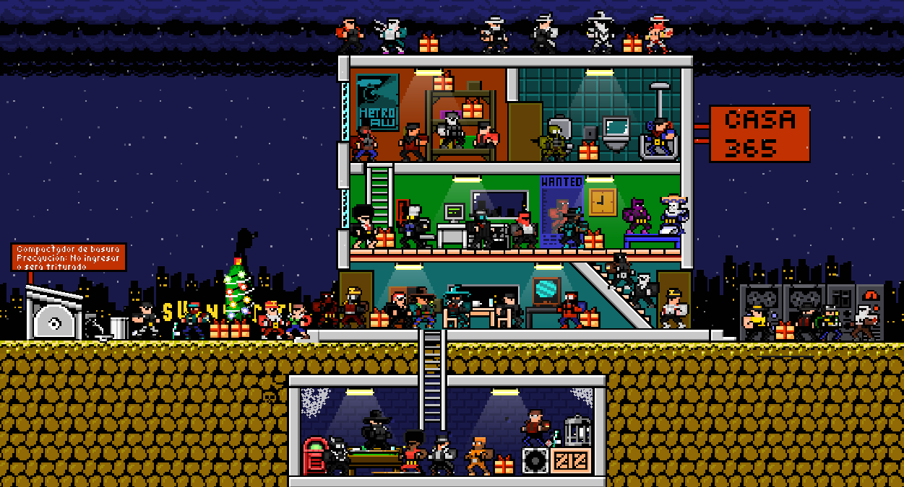

¿Dónde conseguirlo?
En Steam a 22 soles, a veces en oferta.
Superfighters Deluxe es un juego de acción en 2D multijugador que ofrece intensas batallas entre personajes con cabezas planas en arenas pequeñas y altamente destructibles. Los jugadores deben utilizar sus habilidades, estrategia y un poco de suerte para sobrevivir en cada ronda.
En Steam a 22 soles, a veces en oferta.